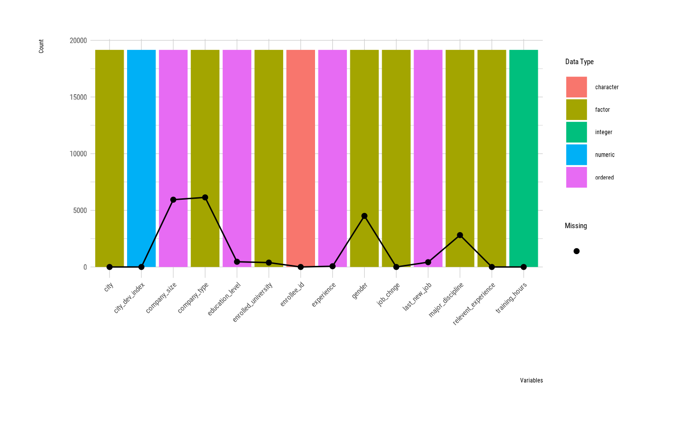
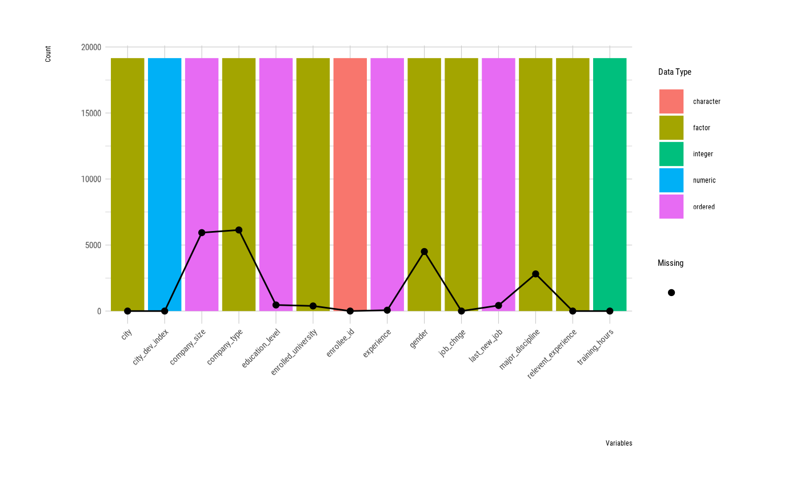

Visualize a plot by attribute of `overview` class. Visualize the data type, number of observations, and number of missing values for each variable.
Arguments
- x
an object of class "overview", usually, a result of a call to overview().
- order_type
character. method of order of bars(variables).
- typographic
logical. Whether to apply focuses on typographic elements to ggplot2 visualization. The default is TRUE. if TRUE provides a base theme that focuses on typographic elements using hrbrthemes package.
- base_family
character. The name of the base font family to use for the visualization. If not specified, the font defined in dlookr is applied. (See details)
- ...
further arguments to be passed from or to other methods.
Value
A ggplot2 object.
Details
The base_family is selected from "Roboto Condensed", "Liberation Sans Narrow", "NanumSquare", "Noto Sans Korean". If you want to use a different font, use it after loading the Google font with import_google_font().
See also
Examples
# \donttest{
ov <- overview(jobchange)
ov
#> division metrics value
#> 1 size observations 19158
#> 2 size variables 14
#> 3 size values 268212
#> 4 size memory size 2318464
#> 5 duplicated duplicate observation 0
#> 6 missing complete observation 8955
#> 7 missing missing observation 10203
#> 8 missing missing variables 8
#> 9 missing missing values 20733
#> 10 data type numerics 1
#> 11 data type integers 1
#> 12 data type factors/ordered 11
#> 13 data type characters 1
#> 14 data type Dates 0
#> 15 data type POSIXcts 0
#> 16 data type others 0
summary(ov)
#> ── Data Scale ──────────────────────────────────────────────
#> • Number of observations : 19,158
#> • Number of variables : 14
#> • Number of values : 268,212
#> • Size of located memory(bytes) : 2,318,464
#>
#> ── Duplicated Data ─────────────────────────────────────────
#> • Number of duplicated observations : 0 (0%)
#>
#> ── Missing Data ────────────────────────────────────────────
#> • Number of completed observations : 8,955
#> • Number of observations with NA : 10,203 (53.26%)
#> • Number of variables with NA : 8
#> • Number of NA : 20,733
#>
#> ── Data Type ───────────────────────────────────────────────
#> • Number of numeric variables : 1
#> • Number of integer variables : 1
#> • Number of factors variables : 11
#> • Number of character variables : 1
#> • Number of Date variables : 0
#> • Number of POSIXct variables : 0
#> • Number of other variables : 0
#>
#> ── Individual variables ────────────────────────────────────
#> Variables Data Type
#> 1 enrollee_id character
#> 2 city factor
#> 3 city_dev_index numeric
#> 4 gender factor
#> 5 relevent_experience factor
#> 6 enrolled_university factor
#> 7 education_level ordered
#> 8 major_discipline factor
#> 9 experience ordered
#> 10 company_size ordered
#> 11 company_type factor
#> 12 last_new_job ordered
#> 13 training_hours integer
#> 14 job_chnge factor
plot(ov)
 # sort by name of variables
plot(ov, order_type = "name")

# sort by data type of variables
plot(ov, order_type = "type")
# }
# sort by name of variables
plot(ov, order_type = "name")

# sort by data type of variables
plot(ov, order_type = "type")
# }